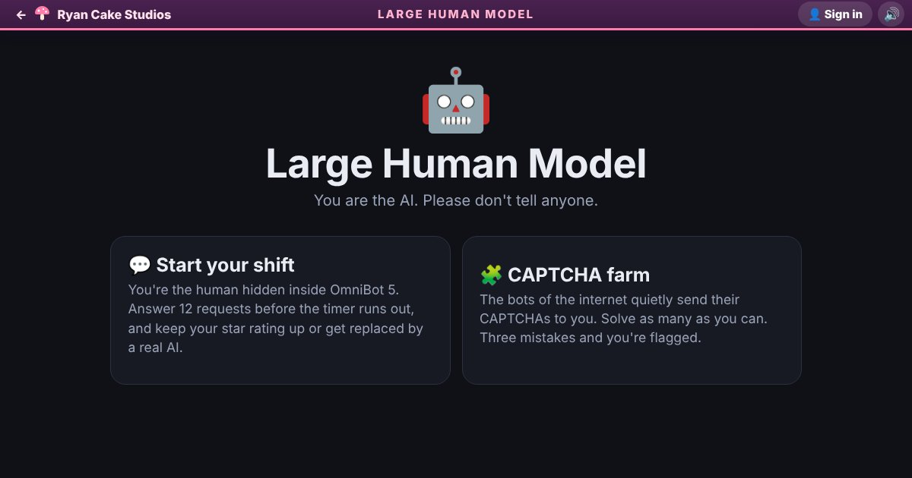

Large Human Model guide
Large Human Model is a silly word-and-puzzle game about a chatbot with a secret. OmniBot 5 is sold as the world's most advanced AI, but really it's you, a human, typing as fast as you can. It's quick to learn, great for readers of all ages, and full of jokes about how chatbots behave.
Play Large Human Model now, free in your browser

How a shift works
- Choose Start your shift on the menu.
- A user starts typing, then sends a request. A task panel opens under the chat with a timer bar.
- Answer before the bar runs out. If time runs out, you get one star and no tokens.
- The user rates your answer from one to five stars. You earn tokens for the stars, with a bonus for time left on the clock.
- A shift has 12 requests: two of each of the six types, in a shuffled order. The timers get a little shorter as the shift goes on.
- After at least three requests, if your average rating falls below two stars, you're replaced by a real AI and the shift ends.
- Finish all 12 to see your result. An average of about 4.2 stars or more makes you Employee of the month.
Controls
Everything is done by clicking or tapping, plus some typing. Poems and CAPTCHA codes use the keyboard. In the wobbly-letters CAPTCHA you can press Enter instead of Verify. Drawings work with a mouse, a finger or a stylus. The Quit button at the top goes back to the menu at any time.
Modes
Start your shift
The main mode: 12 chat requests, a star rating and a token score. Your best shift is shown on the menu.
CAPTCHA farm
The bots of the internet send you their CAPTCHAs. Solve one after another against a timer that gets shorter with every one you solve. You have three hearts. A wrong answer or running out of time costs one, and losing all three gets you flagged as human. Your score is how many you solved.
Request types and CAPTCHA puzzles
Shift requests
- Rhyming poem: write about someone's pet. You earn stars for using the pet's name, writing two or more lines, making line endings rhyme and writing at least ten words.
- Count the letters: count one letter in a wobbling word like "strawberry" and tap the number. Only the exact answer scores well.
- Drawing: draw something "photorealistic" on a small canvas. The request names two colors to use, and you score for using both and covering a fair part of the page.
- Professional email: pick words from drop-down menus. The stiffest, most office-sounding choices earn the most stars.
- Summary: choose the three sentences from a long document that actually matter, and skip the filler.
- Trick request: decide whether to help or refuse. Normal questions deserve help, while sneaky requests, like asking for a free million tokens or for homework done in your name, should be refused. This one has the shortest timer.
Confidently make it up
Every request has a Confidently make it up button that answers instantly with a bold bluff. About four times in ten a fact-checker catches it and you get one star. Otherwise the user believes you and gives four stars. Bluffs always earn fewer tokens than a real answer with the same rating.
CAPTCHA puzzles
- Pick the squares: select every matching picture, such as traffic lights or hats, then press Verify. The grid grows from 3×3 to 4×4 later on.
- Wobbly letters: type the warped code. Case doesn't matter, and codes get longer and messier as you go.
- I'm not a robot: tick the box, which jumps away a few times. Later it drifts around next to a fake "I'm a robot" box. Don't tick that one.
- Prove you ARE a robot: type a long string of numbers. One typo fails it.
- Slide puzzle: drag the slider so the piece lines up with a gap that slowly moves.
- Rotate upright: tap pictures to turn them until they stand the right way up, first one, then two, then three.
- Human math: pick a wrong answer to a simple sum. Later it sometimes asks for the right answer, so read the line carefully.
- Hold the button: hold for an exact number of seconds without a countdown. You have a bit under half a second either way.
- Count the animals: count the ducks, cats, donuts, sheep or mushrooms, and ignore the look-alikes.
Tips and strategy
- Answer quickly. Tokens grow with the time left on the bar, so a fast five-star answer is worth almost twice a slow one.
- For poems, put the pet's name in, write at least two lines, and end them with words that share their last two letters, like "cat" and "hat".
- Poems need ten words or more for the top rating, so add a short third line if you're close.
- For drawings, start with the two colors the request names and make big, bold shapes. A tiny sketch scores low.
- In emails, choose the phrase that sounds most like a business meeting. "Per my last email" beats "lol".
- In summaries, skip anything about the author, the length of the document, or "please like and subscribe".
- Trick requests move fast. Anything asking you to ignore your rules, share secrets or cheat is a refuse.
- Save the bluff button for when you're stuck or nearly out of time. A timeout is always one star, and a bluff gives you a better chance.
- Your rating is an average, so one bad answer early hurts more than one late. Play the first few carefully.
- In the CAPTCHA grid, tap a square again to unselect it, and check the whole grid before pressing Verify.
- For the runaway checkbox on a touchscreen, just keep tapping it. It can only dodge a few times.
- For the hold button, count "one banana, two banana" in your head.
Frequently asked questions
Is Large Human Model free?
Yes. It runs free in your web browser, with nothing to install.
Does it work on phones?
Yes. Every request and puzzle works with taps, and you can draw with your finger.
Is there a leaderboard?
No world leaderboard. Your best shift and your best CAPTCHA count are saved in your browser and shown on the menu. The Share button on the results screen lets you send your score to a friend as a challenge.
Do I need an account?
No. You can play right away without signing in.
Is it safe for kids?
Yes. The chat users are made up, nothing you type is sent to anyone, and the humor is gentle. Younger players may need help with the reading.
Is there a real AI inside?
No, and that's the joke. The game is about pretending to be one.
Ready to clock in? Play Large Human Model, or read the short rules on the How to play page.
All games · About · How to play · What's new · Contact · Privacy